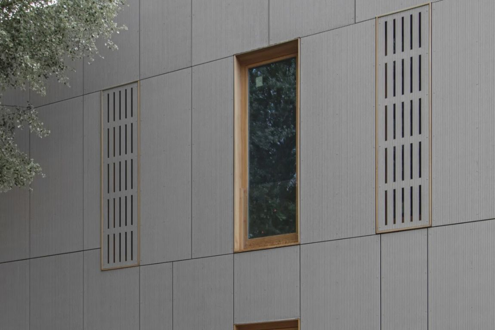

What is PAS 9980?
PAS 9980 is a Publicly Available Specification (PAS) published by the British Standards Institution (BSI). Its full title is "Fire risk appraisal of external wall construction and cladding of existing blocks of flats — Code of practice." In plain terms, it's the official rulebook for how a fire risk appraisal of external walls should be carried out in the UK.
Before PAS 9980 existed, there was no single, consistent method for assessing external wall fire risk. Different assessors approached the task in different ways, which made it difficult for leaseholders, lenders and building owners to have confidence that two assessments meant the same thing. PAS 9980 was developed to close that gap.
Two editions now exist
PAS 9980 was first published in 2022. BSI published an updated second edition, PAS 9980:2026, on 14 September 2026, which came into full effect on 30 September 2026. The update is intended to add more structure and consistency to how assessments are carried out, not to change the purpose of a FRAEW or fundamentally alter how risk is assessed. FRAEW reports competently produced in accordance with PAS 9980:2022 remain valid and can continue to be relied upon — but if you're commissioning a new assessment, it's worth confirming with your assessor which edition they're working to.
Why does PAS 9980 exist?
PAS 9980 was developed following widespread concern about the fire safety of external wall systems on existing residential blocks, and the recognition that assessments needed a consistent, defensible methodology rather than being carried out on an ad hoc basis. It sets out how a competent assessor should gather evidence, evaluate risk, and reach a proportionate conclusion — one that takes into account the building as a whole, not just the presence of a single material.
A key principle within PAS 9980 is proportionality: not every building with combustible material somewhere in its external wall automatically requires full remediation. The standard is designed to help assessors distinguish between genuine, significant fire risk and lower-risk situations where the existing safety measures across the building are sufficient.
How does PAS 9980 relate to a FRAEW?
A FRAEW — Fire Risk Appraisal of External Walls — is the assessment itself. PAS 9980 is the methodology that assessment should follow. When a fire engineer or facade consultant carries out a FRAEW "in accordance with PAS 9980," they are applying the structured process the standard sets out: reviewing available evidence, inspecting the building, evaluating risk factors, and documenting their findings and recommendations in a consistent format.
For a deeper look at how the FRAEW process works in practice, and what tends to influence how long it takes and what it costs, see our guide to FRAEW costs.
Who uses PAS 9980?
- Fire engineers and facade consultants use it as the methodology for carrying out FRAEWs.
- Managing agents, freeholders and RTM companies rely on it as the recognised standard when commissioning an assessment, so they know what a competent process should look like.
- Lenders and valuers increasingly expect that any external wall assessment referenced in an EWS1 form has been carried out with reference to PAS 9980, giving them confidence in its rigour.
- Funding schemes, including the Building Safety Fund and the Cladding Safety Scheme — now including a route for eligible buildings under 11 metres — generally expect assessments submitted in support of an application to reflect current recognised practice.
What does a PAS 9980 appraisal consider?
A PAS 9980 appraisal takes a holistic view of a building's external wall system rather than focusing on a single material in isolation. Broadly, it considers:
- The overall build-up and construction of the external wall system, including insulation and cavity barriers.
- The presence and behaviour of specific cladding and insulation materials in the event of fire.
- Balconies and how they interact with the wall behind them.
- The building's height, layout and means of escape, since risk is assessed in the context of the whole building, not the wall in isolation.
- Existing fire safety measures already in place, such as compartmentation and fire detection.
- The quality and reliability of available evidence, including drawings, specifications and any previous investigation.
The result is a risk-rated report rather than a simple pass or fail. Some findings may warrant no further action; others may point towards interim safety measures or full remediation, depending on the level of risk identified.
Where Wrightwood fits in
Wrightwood Consulting does not carry out PAS 9980 appraisals ourselves. Our role is to help building owners and managing agents appoint a suitably qualified fire engineer or facade consultant, brief them properly on the building, and coordinate what happens next once the appraisal is complete.
Frequently asked questions
Is PAS 9980 a legal requirement?
PAS 9980 is a code of practice rather than legislation, but it is now the widely recognised standard for external wall fire risk appraisals in the UK, and assessments carried out without reference to it may be viewed less favourably by lenders, insurers and funding schemes.
Does PAS 9980 apply to all buildings?
PAS 9980 is specifically aimed at existing blocks of flats. It is not intended for new-build design, which is covered by other standards and Building Regulations guidance.
Do I need a new assessment if my building already has an older report?
It depends on when the previous assessment was carried out and what methodology it followed. A suitably qualified assessor can advise whether an existing report remains adequate or whether an updated appraisal in line with PAS 9980 is advisable.
Is PAS 9980:2022 still valid now that PAS 9980:2026 has been published?
Yes. BSI has confirmed that FRAEW reports competently produced in accordance with PAS 9980:2022 remain valid and can continue to be relied upon. The 2026 edition applies going forward and adds more structure to the methodology, but existing 2022-compliant assessments are not invalidated.